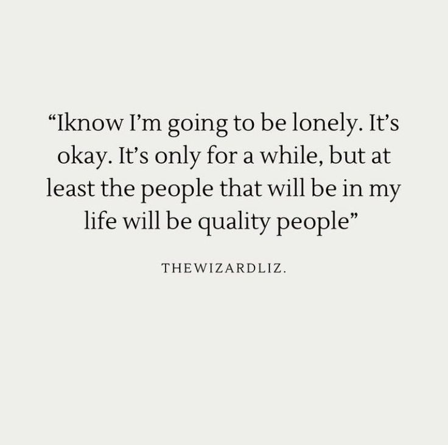

Mala elección de compañías
Empecemos con la manera en la que las personas deciden ser acompañadas.
Parece ser que les encanta estar en ambientes tóxicos, porque únicamente están con gente que hablan mal de ellos o no los tratan de manera digna, y esto esta tan normalizado al punto que ha ocasionado que romanticen un trato normal de respeto en sus relaciones amorosas.
Todo esto surge del punto anterior; relaciones a través de redes sociales.
Cuando se relacionan así, no pueden ver la intenciones reales de las personas con quienes hablan, y esto poco a poco genera que todas sus relaciones se basen en tratos toxicos, además de que generan una codependencia a todos estos tratos desde el momento que dejan de respetarse a sí mismos, pero esto lo veremos dentro de dos puntos siguientes.
"